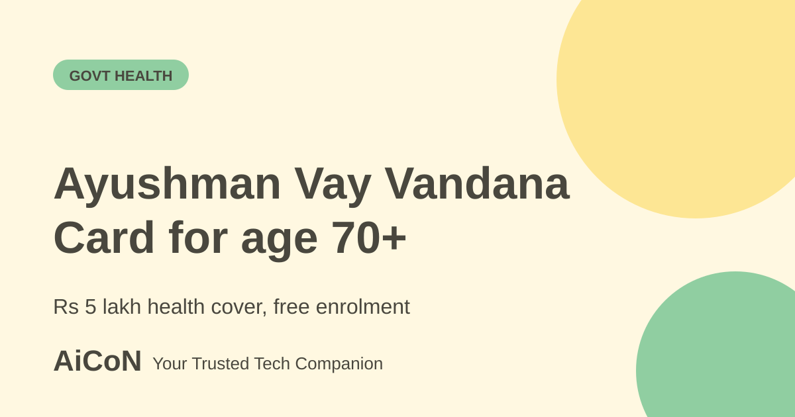

Ayushman Vay Vandana Card: free cover for age 70+
Senior citizens aged 70 and above can get the Ayushman Vay Vandana Card under PM-JAY, whatever their income. This guide explains the cover, how to enrol and what to check if you already have another health scheme.

What is the Ayushman Vay Vandana Card?
On 29 October 2024 the Prime Minister announced that Ayushman Bharat PM-JAY would cover all senior citizens aged 70 years and above. The card issued to them is called the Ayushman Vay Vandana Card. According to the Press Information Bureau (PIB), it provides Rs 5 lakh of free health cover to all citizens aged 70 and above, irrespective of socio-economic status.
Who can enrol?
- Citizens aged 70 years or above. Aadhaar is used for enrolment.
- Families already covered under PM-JAY: the senior member gets an additional top-up cover of up to Rs 5 lakh per year for themselves, per PIB.
- Those on the Central Government Health Scheme (CGHS), Ex-Servicemen Contributory Health Scheme (ECHS) or Ayushman CAPF must choose between that scheme and PM-JAY.
- PIB says people with private health insurance or members of the ESI scheme are also eligible.
Understand the family limit and scheme choice
The NHA FAQ confirms the ₹5 lakh limit is shared by eligible senior members of the same family, not a separate ₹5 lakh for each person. It also says surrendering an existing government health scheme to choose PM-JAY is a one-time option that cannot be reversed. Ask 14555 before giving up existing cover.
How to enrol, step by step
- Keep your Aadhaar card and your Aadhaar-linked mobile number ready.
- Choose a route: visit your nearest empanelled hospital, download the Ayushman App from Google Play, or visit beneficiary.nha.gov.in.
- Enter your details and complete the Aadhaar-based verification.
- Check that your name and age are correct, then submit.
- Save or download your card. Show it, with your ID, when you go to an empanelled hospital.
- For questions, PIB lists the toll-free number 14555, or a missed call to 1800110770.
Cost and limits
| Enrolment | Free. Never pay an agent to make the card. |
|---|---|
| Cover | Rs 5 lakh a year at empanelled hospitals, per PIB. Top-up of up to Rs 5 lakh for senior members of families already covered. |
| Where used | Only at hospitals empanelled under the scheme. Ask the hospital before admission. |
| Other schemes | CGHS, ECHS and CAPF users must choose one. |
What changed since the short post?
The NHA FAQ confirms the ₹5 lakh limit is shared by eligible senior members of the same family, not a separate ₹5 lakh for each person. It also says surrendering an existing government health scheme to choose PM-JAY is a one-time option that cannot be reversed.
Frequently asked questions
Is there an income limit?
PIB says the cover is for all citizens aged 70 and above irrespective of socio-economic status.
Do I need to be on PM-JAY already?
No. Families already covered get a top-up for the senior member.
Is ₹5 lakh given separately to each senior?
No. NHA says eligible senior members of the same family share the ₹5 lakh annual limit. The additional senior top-up is not available to younger family members.
Sources: NHA official senior-citizen FAQ, PIB: Enrolment for Ayushman Vay Vandana Cards reaches 25 lakhs, Beneficiary portal (NHA). Checked 6 October 2026.